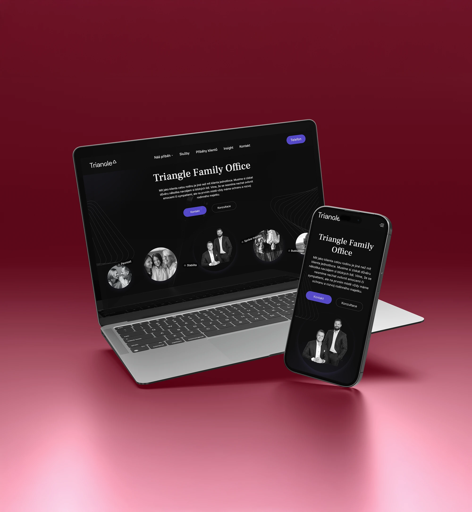
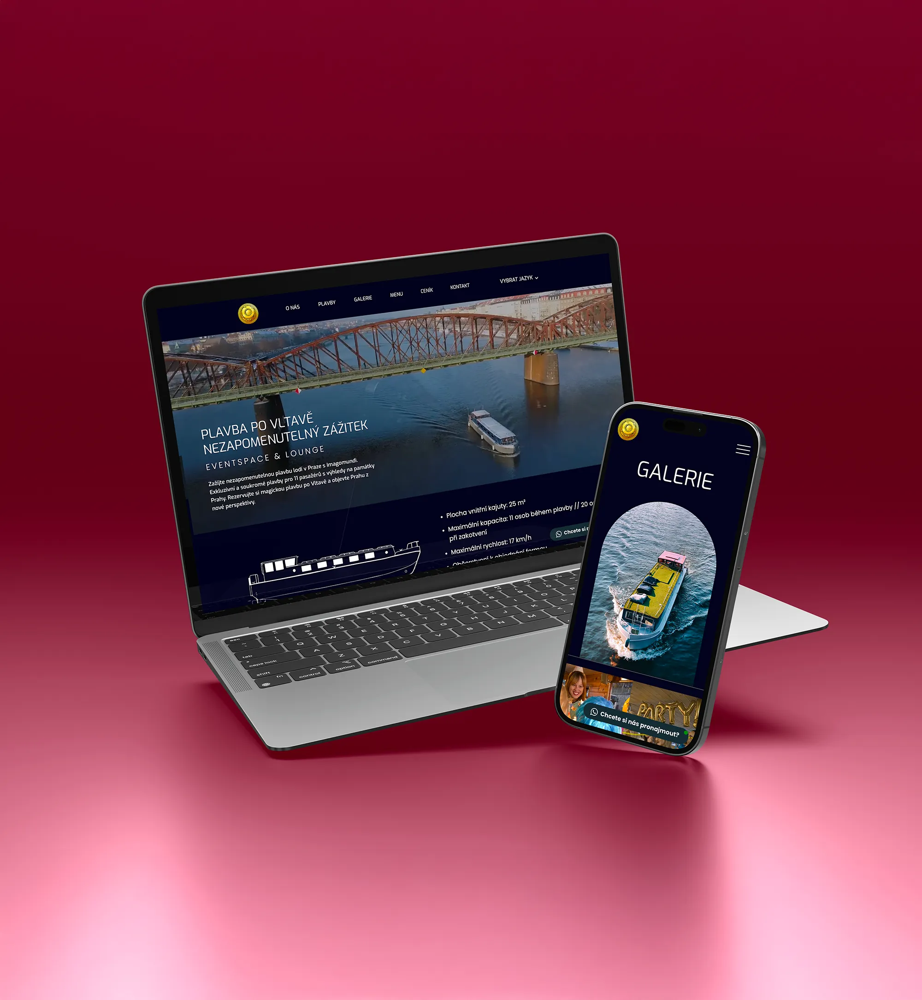
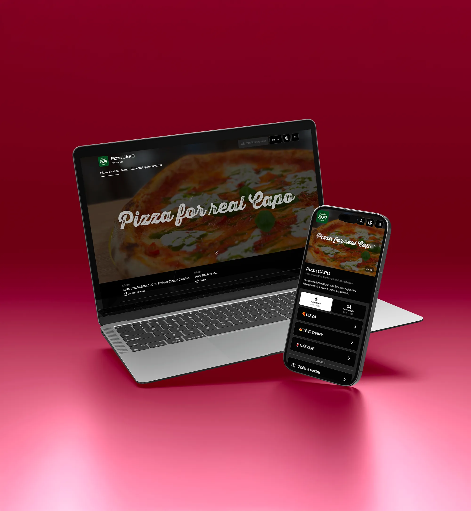
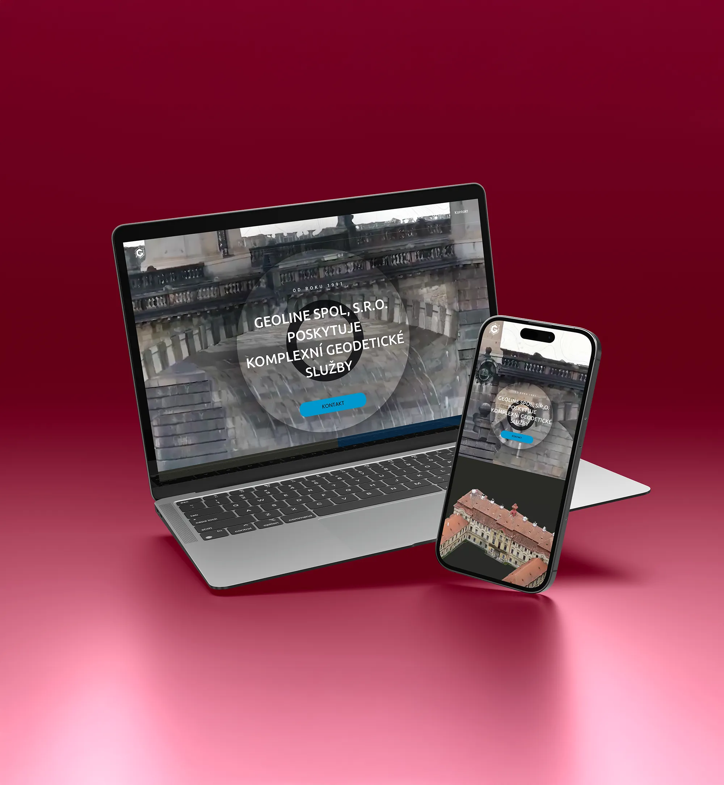

Web design
Brand manuál
Custom


Cíl
Vytvořit webovou prezentaci a vizuální identitu pro žižkovskou pizzerii Pizza Capo. Cílem bylo navrhnout moderní a funkční řešení, které zjednoduší objednávání jídla, sladí se s provozem restaurace a podpoří značku navenek i uvnitř podniku.
O projektu
Původní web pro Pizza Capo jsem vytvořil ve WordPressu na přání klienta. Společně jsme navrhli logo, sestavili brand manuál a web následně přepracovali tak, aby byl napojený na pokladní systém Dotykačka. Výsledkem je moderní a přehledné řešení, které usnadňuje online objednávky a podporuje plynulý provoz restaurace. Důraz jsme kladli na responzivitu, vizuální jednotu a jednoduché ovládání jak pro zákazníky, tak pro personál.
Co jsem udělal
- Návrh loga a vizuální identity značky
- Vytvoření brand manuálu (barvy, typografie, použití značky)
- Kompletní návrh a realizace webu ve WordPressu
- Napojení webu na pokladní systém Dotykačka
- UX návrh zaměřený na jednoduché a rychlé objednávání

Tvůrčí proces
Tvůrčí proces začal vytvořením vizuální identity značky. Navrhlo se logo a sestavil brand manuál, který definoval barvy, typografii a celkový tón komunikace. Následovala tvorba webu ve WordPressu – s důrazem na přehlednost, snadné ovládání a přímé napojení na pokladní systém Dotykačka. Výzvou bylo technické řešení online objednávek tak, aby zapadalo do provozního systému restaurace bez složitých integrací.
V pozdější fázi se web musel z technických důvodů předělat a aktuálně už neběží na WordPressu. Přesto i po této úpravě zůstává zachovaná vizuální identita a základní struktura navržená v původním řešení.
Závěr
Pizza Capo pro mě nebyl jen webový projekt, ale komplexní práce na celé značce – od vizuální identity až po funkční digitální řešení. I když se web později z technických důvodů předělal a už neběží na WordPressu, moje práce na brand manuálu, logu a původní struktuře webu dál tvoří základ současné prezentace značky. Těší mě, že výstupy ze spolupráce dodnes pomáhají restauraci fungovat a růst.

TFO
TFO
Web / Marketing
Web / Marketing

Imago Mundi
Imago Mundi
Web / Marketing
Web / Marketing

Pizza Capo
Pizza Capo
Web / Brand
Web / Brand
